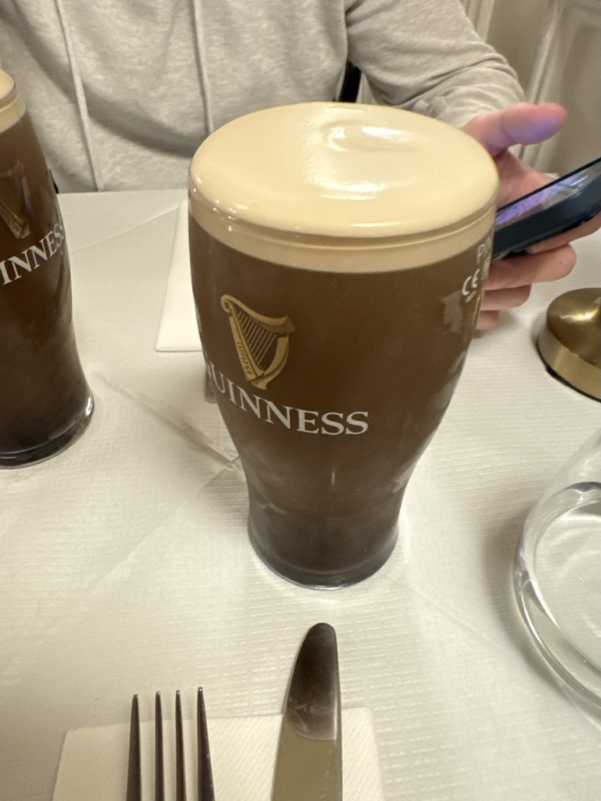
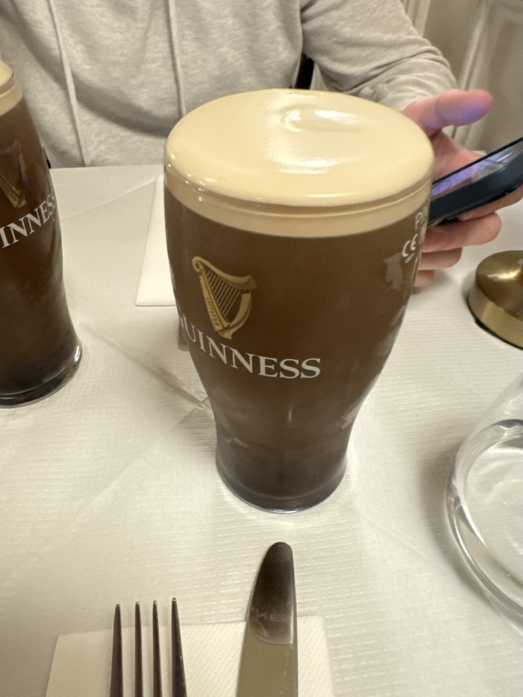

Exploring Dublin: A City of History and Culture
Today I saw many things, ranging from the most infamous murder of all of Europe to the best Guinness in Ireland! I started off the day with an amazing brunch. Next, I took a tour of the city from a tour guide who had so much information in his back pocket. I learned about the city's culture and history leading up to current day, and learned about the story behind the Spire of Dublin. Afterwards, I drank my first Irish Guiness at Lord Edwards and was very impressed. I finished off the night with a great Chinese Restaurant.
 
